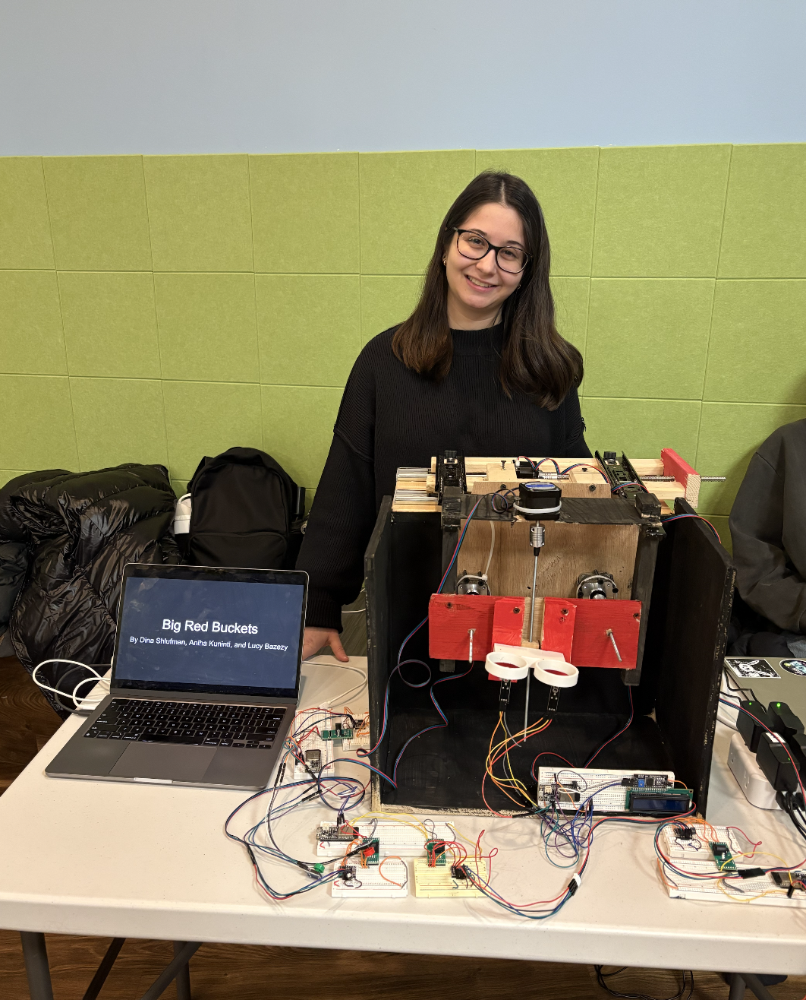

Physical Computing
Big Red Buckets
As part of INFO 4320: Introduction to Rapid Prototyping and Physical Computing, I presented my project: a basketball arcade game called Big Red Buckets. The game is equipped with tri-axial movement (X, Y, and Z). It can also track points on both of its 3D-printed hoops. The project was created entirely from scratch, including coding, breadboarding, and lumber work.